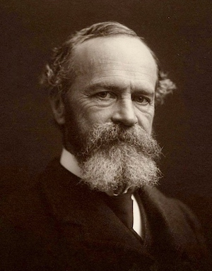
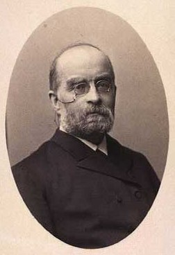

EIM02
Definicje i historia
Krzysztof Basiński
Zastanów się
- Czym są emocje?
- Po co są emocje?
- Jak powstają emocje?
Próby zdefiniowania emocji
Emocja jest zazwyczaj wynikiem oceny zdarzenia jako wpływającego w istotny sposób na cele lub interesy działającego podmiotu. Ocena ta może być zarówno świadoma, jak i nieuświadamiana. Emocja będzie odczuwana jako pozytywna, jeśli zdarzenie zostanie ocenione jako zgodne celami i interesami, a negatywna, jeśli będzie uznane za niezgodne z nimi.
(Nico Frijda, za Strelau & Doliński)
Próby zdefiniowania emocji
Kluczowym elementem emocji jest uruchomienie gotowości do realizacji odpowiadającego jej programu działania oraz nadania temu programowi statusu priorytetu.
(Nico Frijda, za Strelau & Doliński)
Próby zdefiniowania emocji
Program emocjonalny może więc blokować, zaburzać, modyfikować inne (poznawcze lub behawioralne) programy aktualnie realizowane przez podmiot. Program emocjonalny, w odróżnieniu od programów behawioralnych czy poznawczych, ma status pilnego i jego realizacja nie może być odłożona w czasie.
(Nico Frijda, za Strelau & Doliński)
Próby zdefiniowania emocji
Emocja jest zwykle doświadczana jako szczególny rodzaj stanu psychicznego, któremu czesto towarzyszą (bądź następują bezpośrednio po nim) zmiany somatyczne, ekspresje mimiczne i reakcje behawioralne.
(Nico Frijda, za Strelau & Doliński)
Próby zdefiniowania emocji
“Episodic, relatively short-term, biologically-based patterns of perception, experience, physiology, action, and communication that occur in response to specific physical and social challenges and opportunities”
(Keltner & Gross, 1999)
Próby zdefiniowania emocji
“Emotions are a kind of radar and rapid response system, constructing and carrying meaning across the flow of experience. Emotions are the tools by which we appraise experience and prepare to act on situations”
(Cole, Martin, & Dennis, 2004, p. 319)
Terminologia
- Emocja (emotion)
- Uczucie/odczucie (feeling)
- Nastrój (mood)
- Afekt, core affect
- Ekspresja emocji (emotional expression)
Emocja vs. u/od/czucie
(…) w języku polskim określenia “emocje” i “uczucia” są traktowane w sposób niemal synonimiczny, natomiast w języku angielskim taka sytuacja nie zachodzi. Feeling czyli uczucie odnosi się do subiektywnego elementu emocji, z kolei termin emotion jest szerszy i oprócz uczucia obejmuje procesy nerwowe oraz ekspresję, a niekiedy specyficzne zachowania.
(Strelau & Doliński)
Emocja vs. u/od/czucie
Feelings are mental experiences of body states, which arise as the brain interprets emotions, themselves physical states arising from the body’s responses to external stimuli. (The order of such events is: I am threatened, experience fear, and feel horror.)
(Antonio Damasio)
Emocja vs. u/od/czucie
- Na tym wykładzie nie będziemy mówić o uczuciach
- Emocja to dla mnie całość doświadczenia (fizjologia, stan psychiczny, motywacyjny, etc)
- Odczucie (feeling) to percepcja zmian w fizjologii
Emocja vs. nastrój
Nastrój to stan afektywny o zazwyczaj niewielkiej intensywności, charakteryzujący się pozytywnym lub negatywnym znakiem i zawierający mniej lub bardziej konkretne oczekiwania co do wystąpienia w przyszłości podmiotu stanów zgodnych z tym znakiem.
(Strelau & Doliński)
Core affect, afekt
…później…
Ekspresja emocji
- Emocje czasem “widać” (na twarzy, w zachowaniu)
- To objawianie się nazywamy ekspresją emocji
- Jest to tylko część większego doświadczenia emocjonalnego
Teorie emocji - historyczne
- Jamesa-Langego
- Cannona-Barda
- Teoria dwuczynnikowa (Schachter i Singer)
Teoria Jamesa-Langego
 
Teoria Jamesa-Langego
- Koniec XIX wieku
- Fizjologiczna reakcja pobudzenia jest pierwotna
- Emocje są konsekwencją odczuwania zmian fizjologicznych
- Różne wzorce zmian fizjologicznych powodują różne emocje
Teoria J-L i niedźwiedzie
- Człowiek widzi niedźwiedzia w lesie…
- …ma fizjologiczną reakcję na niedźwiedzia…
- …interpretuje tą reakcję jako emocję…
- …i ucieka!
Teoria Cannona-Barda
- Walter Cannon (1871–1945) fizjolog z Harvard University (przy okazji twórcja pojęcia homeostaza), oraz jego uczeń, Philip Bard (1898–1977)
- Zewnętrzny bodziec aktywuje receptory (np. dotyku), które są przewodzone do kory mózgowej
- Na podstawie analizy dokonywanej w korze aktywowane są wzorce ekspresji emocjonalnej
Teoria Cannona-Barda
- Ta aktywacja dokonuje się we wzgórzu (thalamus)
- Różne emocje charakteryzują się różną ekspresją, ponieważ mają różne wzorce aktywacji wzgórza
- Ekspresja emocji dzieje się jednocześnie z innymi zmianami fizjologicznymi (nie jest konsekwencją pobudzenia jak w teorii J-L)
Co robi wzgórze?
- “Centrala telefoniczna” - przekazuje informacje sensoryczne z obwodu do kory mózgowej
- Reguluje też kwestie związane ze spaniem/czuwaniem
- Postuluje się rolę wzgórze w podtrzymywaniu przytomności
Eksperyment Schachtera i Singera
- Gr.1 -> adrenalina + informacje o jej działaniu
- Gr.2 -> adrenalina + brak info o jej działaniu
- Gr.3 -> adrenalina + nieprawdziwe informacje
- Gr.4 -> placebo
Eksperyment Sch-S - manipulacje
- Grupa euforii
- Grupa gniewu
Eksperyment Sch-S - wyniki
- Euforyczność w warunku euforii (od najwyższej do najniższej): adr-misinformed, adr-ignorant, placebo, adr-informed.
- Gniew w warunku gniewu (najwyższy do najniższego): adr-ignorant, placebo, adr-informed.
Teoria dwuczynnikowa Schachtera i Singera
Emocje są wynikiem: 1. Pobudzenia 2. Etykiety opisującej to pobudzenie w danej sytuacji
Teoria dwuczynnikowa Schachtera i Singera
- Pobudzenie zawsze poprzedza emocję
- Źródłem pobudzenia może być wszystko
- To samo pobudzenie może być etykietowane różnie, w zależności od oceny